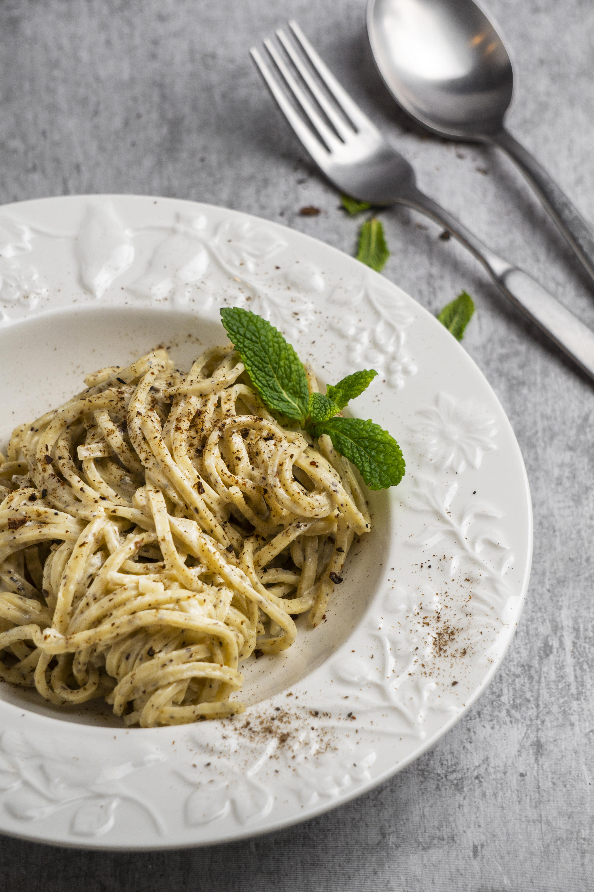

Arepa

Designed by Freepik
Cacio e pepe is a pasta dish typical of the Lazio region of Italy.
The dish contains grated pecorino romano and black pepper with tonnarelli or spaghetti.
A common story is that shepherds from the pastoral communities of Lazio, Abruzzo, Tuscany,
and Umbria created cacio e pepe in the 18th or 19th century.
Ingredients
- 1 pound spaghetti
- 6 tablespoons olive oil
- 2 cloves garlic, minced
- 2 teaspoons ground black pepper
- 3/4 cups grated Pecorino Romano cheese
Steps
- Bring a large pot of lightly salted water to a boil.
Cook spaghetti in boiling water, stirring occasionally, until tender yet firm to the bite, about 12 minutes.
Reserve 1 cup cooking water, then drain spaghetti.
- Heat olive oil in a large skillet over medium heat. Cook and stir garlic and pepper in hot oil until fragrant, 1 to 2 minutes.
Add cooked spaghetti and Pecorino Romano cheese. Ladle in 1/2 cup reserved cooking water; stir until cheese is melted, about 1 minute.
Stir in more cooking water as needed, 1 tablespoon at a time, until sauce coats spaghetti, about 1 minute more.
- Enjoy!
Home